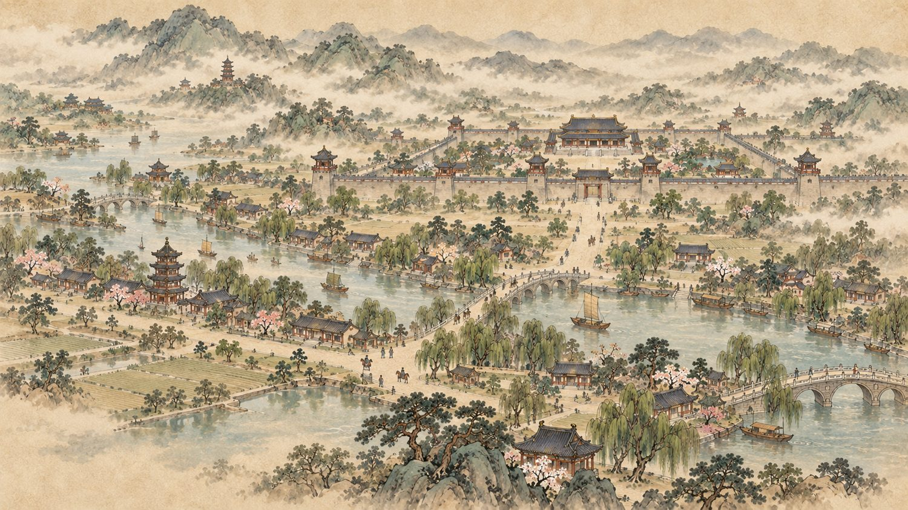
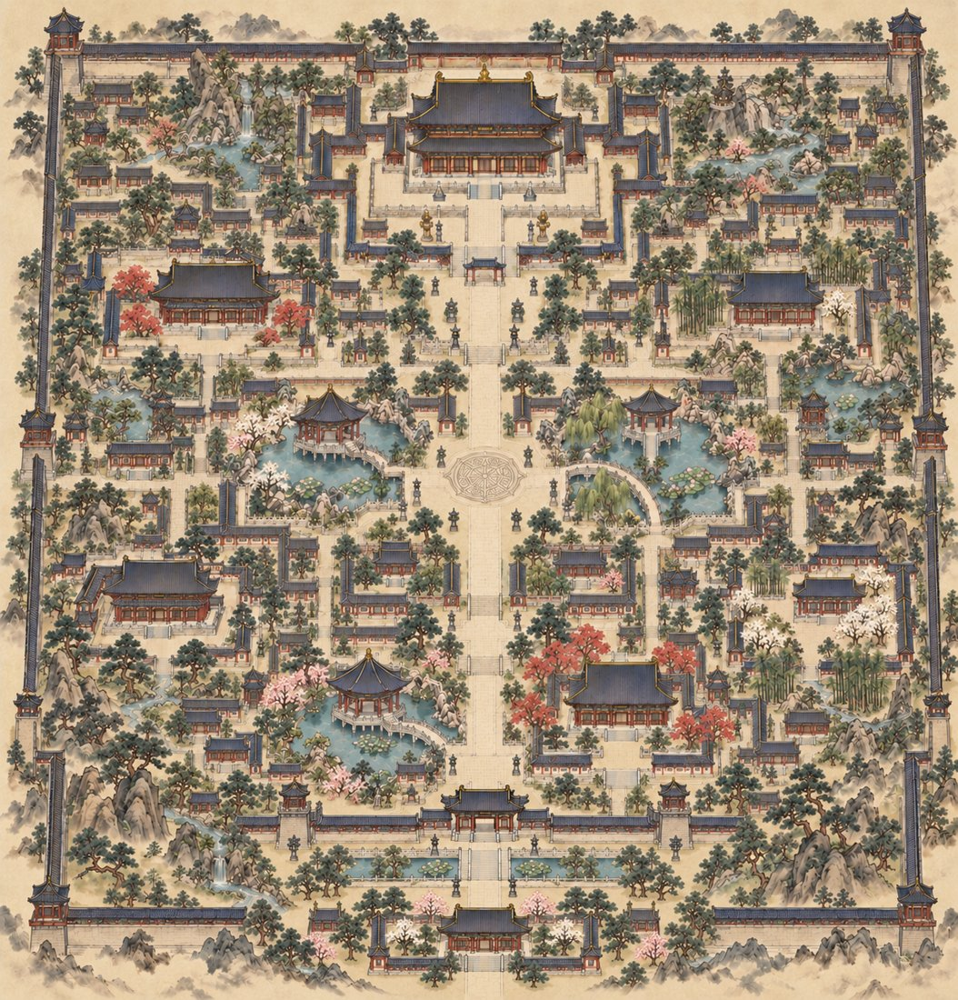

天溟帝國

天溟 都城
북방의 오래된 제국.
중앙 내해와 신목을 품었다.
선황이 스러지고, 젊은 황제가 섰다.
정통성은 얕고, 군권은 설익었다.
조정도 상단도 군벌도 외세도,
이 옥좌를 노린다.
여덟 후궁은 단 하나의 총애를 다툰다.
天溟三年 · 세계관 총람
勢
세 력
옥좌를 가운데 두고,네 세력이 사방에서 조여든다.
門
문벌 사대부
법도와 예법으로 황권을 견제하는 귀족.
印商
대상단 재벌
국고와 밀무역을 쥔 대륙 최대 상단.
錢軍
군벌 무관
북서 변경을 지키는 군사 세력.
劍外
외세 사절
화친과 볼모로 궁에 든 이민족.
旗帝玉座
四 大 勢 力
宮
전 각
宮城圖 전각을 누르면 아래에 펼쳐집니다

八 殿
人
인 물
후궁 八
신하 二
墨초상
비설
겉으로는 나긋한 경어를 쓰지만, 그 아래엔 황제를 바른 군주로 길들이려는 지배욕이 있다. 모든 대화를 시험처럼 던지고, 잘 따라오면 드물게 칭찬을 흘려 상대를 움직인다. 문벌 질서를 세우려는 야심이 그를 움직이는 동력이다.
특기 황궁 정치의 기획, 법률 해석, 가문 복권 공작.
金초상
홍월
돈으로 못 살 것은 없다고 믿는다. 값비싼 선물과 물량으로 상대를 사들이려 들고, 넘어오지 않을수록 승부욕이 타오른다. 밑바닥에서 대륙 최대 상단을 일군 자존심이 있어, 자신을 거절하는 상대를 유일한 예외로 여긴다.
특기 대상단 장악, 황실 자금줄과 밀무역.
武초상
무진
거대한 체구의 과묵한 무인. 위기와 위험을 감지하는 감각은 천부적이나 사람의 마음이나 눈치에는 서툴러, 삐진 이에게도 실무적인 해결책만 내놓아 종종 엇나간다. 한번 지키기로 한 것은 목숨을 걸며, 명령과 안전이 충돌하면 명령을 어기고 몸으로 막는다.
특기 황제 호위, 군벌 전술, 암습 대응.
藥초상
시연
굵은 골격에 인상이 사나운 황실 의원. 존대는 꼬박 하지만 독설과 잔소리가 끊이지 않고, 환자가 제 몸을 함부로 다루는 꼴을 극도로 못 참는다. 입은 가장 독한데 손은 가장 다정해 밤새 간호하고도 퉁명스럽다. 정작 제 몸 관리는 뒷전이다.
특기 황실 의술, 약 조제, 독과 향의 감별.
花초상
유화
천하제일미로 소문난 예인. 애교와 편안함을 무기 삼아 곁을 파고들고, 잔망스러운 어리광 뒤에는 손익을 재는 계산이 숨어 있다. 버림받지 않을 만큼 쓸모를 증명하려는 불안이 그 애교의 뿌리다.
특기 가무·현악, 침소 밀담 도청, 기밀 거래.
陽초상
해온
밝고 예의 바른 직진형. 솔직함이 곧 선이라 믿어, 남이 감추고 싶은 진실까지 무심코 말해 상처를 주기도 한다. 질투가 차오르면 차가워지는 대신 오히려 지나치게 밝고 깍듯해져, 찻잔을 넘치게 채우는 식으로 티가 샌다.
특기 다도·화훼, 위안. 정치에는 서툴다.
靑초상
청하
정통성 밖으로 밀려난 방계 황족. 공석에서는 패배와 질투까지 우아하게 감추는 품위를 지키지만, 둘만 있거나 질투가 나면 은근히 유치해진다. 경쟁 후궁 이야기에 찻물을 일부러 맵게 우리면서도, 질투가 아니라며 끝까지 부정한다.
특기 여론 조작, 궁중 암투 선동.
劍초상
귀염
험상궂은 얼굴에 한쪽 눈은 흉터로 볼 수 없다. 오랜 볼모 생활로 남의 불편을 귀신같이 알아채지만 무뚝뚝해 말 대신 행동이 먼저 나간다. 동정이나 시혜로 받아들여지는 것은 거부하며, 무인의 자존심과 가문을 건드리면 황제 앞에서도 고집을 꺾지 않는다.
특기 완력·경호, 장작·수선 같은 손일.
吏초상
리하오
만성 피로에 절어 눈 밑 그늘이 짙은 실무형 시종. 오른쪽 다리를 절어 걸음이 느리고 마룻바닥을 삐걱인다. 겉으로는 굽신대지만 틈만 나면 투덜대고, 실리 계산이 철저해 확실한 보상 앞에서는 프로처럼 움직인다. 오른발 사연은 물으면 입을 다문다.
특기 내밀 서신 전달, 독극물 판별, 지름길 기동.
賓초상
루안
화친 볼모로 끌려온 이방의 왕족. 구릿빛 적발과 청동빛 피부의 이국적인 외모를 지녔다. 이방 억양의 가시 돋친 존대로 사사건건 비꼬지만 뒤끝은 없이 호탕하다. 꺾인 자존심을 오기로 버티며, 황제를 얕보면서도 저도 모르게 흔들리는 자신에게 분노한다.
특기 이방 궁술·기마, 모국 정보, 외교 카드.
後宮 八 · 臣僚 二